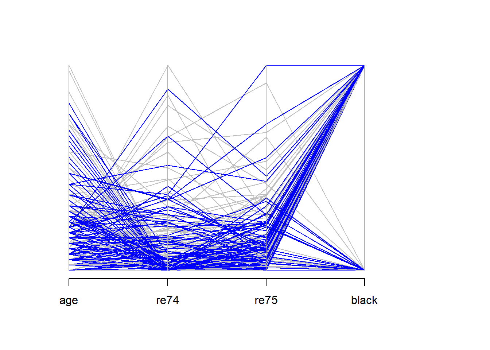

21.6 Matching Methods
Assumption: Observables can identify the selection into the treatment and control groups
Identification: The exclusion restriction can be met conditional on the observables
Motivation
Effect of college quality on earnings
They ultimately estimate the treatment effect on the treated of attending a top (high ACT) versus bottom (low ACT) quartile college
Matching is Selection on observables and only works if you have good observables.
Relative to OLS
- Matching makes the common support explicit (and changes default from “ignore” to “enforce”)
- Relaxes linear function form. Thus, less parametric.
It also helps if you have high ratio of controls to treatments.
For detail summary (Stuart 2010)
Matching is defined as “any method that aims to equate (or”balance”) the distribution of covariates in the treated and control groups.” (Stuart 2010, 1)
Equivalently, matching is a selection on observables identifications strategy.
If you think your OLS estimate is biased, a matching estimate (almost surely) is too.
Unconditionally, consider
\[ E(Y_i^T | T) - E(Y_i^C |C) + E(Y_i^C | T) - E(Y_i^C | T) \\ = E(Y_i^T - Y_i^C | T) + [E(Y_i^C | T) - E(Y_i^C |C)] \\ = E(Y_i^T - Y_i^C | T) + \text{selection bias} \]
where \(E(Y_i^T - Y_i^C | T)\) is the causal inference that we want to know.
Randomization eliminates the selection bias.
If we don’t have randomization, then \(E(Y_i^C | T) \neq E(Y_i^C |C)\)
Matching tries to do selection on observables \(E(Y_i^C | X, T) = E(Y_i^C|X, C)\)
Propensity Scores basically do \(E(Y_i^C| P(X) , T) = E(Y_i^C | P(X), C)\)
Matching standard errors will exceed OLS standard errors
The treatment should have larger predictive power than the control because you use treatment to pick control (not control to pick treatment).
The average treatment effect (ATE) is
\[ \frac{1}{N_T} \sum_{i=1}^{N_T} (Y_i^T - \frac{1}{N_{C_T}} \sum_{i=1}^{N_{C_T}} Y_i^C) \]
Since there is no closed-form solution for the standard error of the average treatment effect, we have to use bootstrapping to get standard error.
Professor Gary King advocates instead of using the word “matching”, we should use “pruning” (i.e., deleting observations). It is a preprocessing step where it prunes nonmatches to make control variables less important in your analysis.
Without Matching
- Imbalance data leads to model dependence lead to a lot of researcher discretion leads to bias
With Matching
- We have balance data which essentially erase human discretion
| Balance Covariates | Complete Randomization | Fully Exact |
|---|---|---|
| Observed | On average | Exact |
| Unobserved | On average | On average |
Fully blocked is superior on
imbalance
model dependence
power
efficiency
bias
research costs
robustness
Matching is used when
Outcomes are not available to select subjects for follow-up
Outcomes are available to improve precision of the estimate (i.e., reduce bias)
Hence, we can only observe one outcome of a unit (either treated or control), we can think of this problem as missing data as well. Thus, this section is closely related to Imputation (Missing Data)
In observational studies, we cannot randomize the treatment effect. Subjects select their own treatments, which could introduce selection bias (i.e., systematic differences between group differences that confound the effects of response variable differences).
Matching is used to
reduce model dependence
diagnose balance in the dataset
Assumptions of matching:
treatment assignment is independent of potential outcomes given the covariates
\(T \perp (Y(0),Y(1))|X\)
known as ignorability, or ignorable, no hidden bias, or unconfounded.
You typically satisfy this assumption when unobserved covariates correlated with observed covariates.
- But when unobserved covariates are unrelated to the observed covariates, you can use sensitivity analysis to check your result, or use “design sensitivity” (Heller, Rosenbaum, and Small 2009)
positive probability of receiving treatment for all X
- \(0 < P(T=1|X)<1 \forall X\)
Stable Unit Treatment value Assumption (SUTVA)
Outcomes of A are not affected by treatment of B.
- Very hard in cases where there is “spillover” effects (interactions between control and treatment). To combat, we need to reduce interactions.
Generalization
\(P_t\): treated population -> \(N_t\): random sample from treated
\(P_c\): control population -> \(N_c\): random sample from control
\(\mu_i\) = means ; \(\Sigma_i\) = variance covariance matrix of the \(p\) covariates in group i (\(i = t,c\))
\(X_j\) = \(p\) covariates of individual \(j\)
\(T_j\) = treatment assignment
\(Y_j\) = observed outcome
Assume: \(N_t < N_c\)
Treatment effect is \(\tau(x) = R_1(x) - R_0(x)\) where
\(R_1(x) = E(Y(1)|X)\)
\(R_0(x) = E(Y(0)|X)\)
Assume: parallel trends hence \(\tau(x) = \tau \forall x\)
- If the parallel trends are not assumed, an average effect can be estimated.
Common estimands:
Average effect of the treatment on the treated (ATT): effects on treatment group
Average treatment effect (ATE): effect on both treatment and control
Steps:
Define “closeness”: decide distance measure to be used
Which variables to include:
Ignorability (no unobserved differences between treatment and control)
Since cost of including unrelated variables is small, you should include as many as possible (unless sample size/power doesn’t allow you to because of increased variance)
Do not include variables that were affected by the treatment.
Note: if a matching variable (i.e., heavy drug users) is highly correlated to the outcome variable (i.e., heavy drinkers) , you will be better to exclude it in the matching set.
Which distance measures: more below
Matching methods
Nearest neighbor matching
Simple (greedy) matching: performs poorly when there is competition for controls.
Optimal matching: considers global distance measure
Ratio matching: to combat increase bias and reduced variation when you have k:1 matching, one can use approximations by Rubin and Thomas (1996).
With or without replacement: with replacement is typically better, but one needs to account for dependent in the matched sample when doing later analysis (can use frequency weights to combat).
Subclassification, Full Matching and Weighting
Neareast neighbor matching assign is 0 (control) or 1 (treated), while these methods use weights between 0 and 1.
Subclassification: distribution into multiple subclass (e.g., 5-10)
Full matching: optimal ly minimize the average of the distances between each treated unit and each control unit within each matched set.
Weighting adjustments: weighting technique uses propensity scores to estimate ATE. If the weights are extreme, the variance can be large not due to the underlying probabilities, but due to the estimation procure. To combat this, use (1) weight trimming, or (2) doubly -robust methods when propensity scores are used for weighing or matching.
Inverse probability of treatment weighting (IPTW) \(w_i = \frac{T_i}{\hat{e}_i} + \frac{1 - T_i}{1 - \hat{e}_i}\)
Odds \(w_i = T_i + (1-T_i) \frac{\hat{e}_i}{1-\hat{e}_i}\)
Kernel weighting (e.g., in economics) averages over multiple units in the control group.
Assessing Common Support
- common support means overlapping of the propensity score distributions in the treatment and control groups. Propensity score is used to discard control units from the common support. Alternatively, convex hull of the covariates in the multi-dimensional space.
Assessing the quality of matched samples (Diagnose)
Balance = similarity of the empirical distribution of the full set of covariates in the matched treated and control groups. Equivalently, treatment is unrelated to the covariates
- \(\tilde{p}(X|T=1) = \tilde{p}(X|T=0)\) where \(\tilde{p}\) is the empirical distribution.
Numerical Diagnostics
standardized difference in means of each covariate (most common), also known as”standardized bias”, “standardized difference in means”.
standardized difference of means of the propensity score (should be < 0.25) (Rubin 2001)
ratio of the variances of the propensity score in the treated and control groups (should be between 0.5 and 2). (Rubin 2001)
For each covariate, the ratio fo the variance of the residuals orthogonal to the propensity score in the treated and control groups.
Note: can’t use hypothesis tests or p-values because of (1) in-sample property (not population), (2) conflation of changes in balance with changes in statistical power.
Graphical Diagnostics
QQ plots
Empirical Distribution Plot
Estimate the treatment effect
After k:1
- Need to account for weights when use matching with replacement.
After Subclassification and Full Matching
weighting the subclass estimates by the number of treated units in each subclass for ATT
WEighting by the overall number of individual in each subclass for ATE.
Variance estimation: should incorporate uncertainties in both the matching procedure (step 3) and the estimation procedure (step 4)
Notes:
With missing data, use generalized boosted models, or multiple imputation (Qu and Lipkovich 2009)
Violation of ignorable treatment assignment (i.e., unobservables affect treatment and outcome). control by
measure pre-treatment measure of the outcome variable
find the difference in outcomes between multiple control groups. If there is a significant difference, there is evidence for violation.
find the range of correlations between unobservables and both treatment assignment and outcome to nullify the significant effect.
Choosing between methods
smallest standardized difference of mean across the largest number of covariates
minimize the standardized difference of means of a few particularly prognostic covariates
fest number of large standardized difference of means (> 0.25)
(Diamond and Sekhon 2013) automates the process
In practice
If ATE, ask if there is enough overlap of the treated and control groups’ propensity score to estimate ATE, if not use ATT instead
If ATT, ask if there are controls across the full range of the treated group
Choose matching method
If ATE, use IPTW or full matching
If ATT, and more controls than treated (at least 3 times), k:1 nearest neighbor without replacement
If ATT, and few controls , use subclassification, full matching, and weighting by the odds
Diagnostic
If balance, use regression on matched samples
If imbalance on few covariates, treat them with Mahalanobis
If imbalance on many covariates, try k:1 matching with replacement
Ways to define the distance \(D_{ij}\)
- Exact
\[ D_{ij} = \begin{cases} 0, \text{ if } X_i = X_j, \\ \infty, \text{ if } X_i \neq X_j \end{cases} \]
An advanced is Coarsened Exact Matching
- Mahalanobis
\[ D_{ij} = (X_i - X_j)'\Sigma^{-1} (X_i - X_j) \]
where
\(\Sigma\) = variance covariance matrix of X in the
control group if ATT is interested
polled treatment and control groups if ATE is interested
- Propensity score:
\[ D_{ij} = |e_i - e_j| \]
where \(e_k\) = the propensity score for individual k
An advanced is Prognosis score (Hansen 2008), but you have to know (i.e., specify) the relationship between the covariates and outcome.
- Linear propensity score
\[ D_{ij} = |logit(e_i) - logit(e_j)| \]
The exact and Mahalanobis are not good in high dimensional or non normally distributed X’s cases.
We can combine Mahalanobis matching with propensity score calipers (Rubin and Thomas 2000)
Other advanced methods for longitudinal settings
marginal structural models (Robins, Hernán, and Brumback 2000)
balanced risk set matching (Li, Propert, and Rosenbaum 2001)
Most matching methods are based on (ex-post)
propensity score
distance metric
covariates
Packages
cemCoarsened exact matchingMatchingMultivariate and propensity score matching with balance optimizationMatchItNonparametric preprocessing for parametric causal inference. Have nearest neighbor, Mahalanobis, caliper, exact, full, optimal, subclassificationMatchingFrontieroptimize balance and sample size (G. King, Lucas, and Nielsen 2016)optmatchoptimal matching with variable ratio, optimal and full matchingPSAgraphicsPropensity score graphicsrboundssensitivity analysis with matched data, examine ignorable treatment assignment assumptiontwangweighting and analysis of non-equivalent groupsCBPScovariate balancing propensity score. Can also be used in the longitudinal setting with marginal structural models.PanelMatchbased on Imai, Kim, and Wang (2018)
| Matching | Regression |
|---|---|
| Not as sensitive to the functional form of the covariates | can estimate the effect of a continuous treatment |
Easier to asses whether it’s working Easier to explain allows a nice visualization of an evaluation |
estimate the effect of all the variables (not just the treatment) |
| If you treatment is fairly rare, you may have a lot of control observations that are obviously no comparable | can estimate interactions of treatment with covariates |
| Less parametric | More parametric |
| Enforces common support (i.e., space where treatment and control have the same characteristics) |
However, the problem of omitted variables (i.e., those that affect both the outcome and whether observation was treated) - unobserved confounders is still present in matching methods.
Difference between matching and regression following Jorn-Ste§en Pischke’s lecture
Suppose we want to estimate the effect of treatment on the treated
\[ \begin{aligned} \delta_{TOT} &= E[ Y_{1i} - Y_{0i} | D_i = 1 ] \\ &= E\{E[Y_{1i} | X_i, D_i = 1] - E[Y_{0i}|X_i, D_i = 1]|D_i = 1\} && \text{law of itereated expectations} \end{aligned} \]
Under conditional independence
\[ E[Y_{0i} |X_i , D_i = 0 ] = E[Y_{0i} | X_i, D_i = 1] \]
then
\[ \begin{aligned} \delta_{TOT} &= E \{ E[ Y_{1i} | X_i, D_i = 1] - E[ Y_{0i}|X_i, D_i = 0 ]|D_i = 1\} \\ &= E\{E[y_i | X_i, D_i = 1] - E[y_i |X_i, D_i = 0 ] | D_i = 1\} \\ &= E[\delta_X |D_i = 1] \end{aligned} \]
where \(\delta_X\) is an X-specific difference in means at covariate value \(X_i\)
When \(X_i\) is discrete, the matching estimand is
\[ \delta_M = \sum_x \delta_x P(X_i = x |D_i = 1) \]
where \(P(X_i = x |D_i = 1)\) is the probability mass function for \(X_i\) given \(D_i = 1\)
According to Bayes rule,
\[ P(X_i = x | D_i = 1) = \frac{P(D_i = 1 | X_i = x) \times P(X_i = x)}{P(D_i = 1)} \]
hence,
\[ \begin{aligned} \delta_M &= \frac{\sum_x \delta_x P (D_i = 1 | X_i = x) P (X_i = x)}{\sum_x P(D_i = 1 |X_i = x)P(X_i = x)} \\ &= \sum_x \delta_x \frac{ P (D_i = 1 | X_i = x) P (X_i = x)}{\sum_x P(D_i = 1 |X_i = x)P(X_i = x)} \end{aligned} \]
On the other hand, suppose we have regression
\[ y_i = \sum_x d_{ix} \beta_x + \delta_R D_i + \epsilon_i \]
where
\(d_{ix}\) = dummy that indicates \(X_i = x\)
\(\beta_x\) = regression-effect for \(X_i = x\)
\(\delta_R\) = regression estimand where
\[ \begin{aligned} \delta_R &= \frac{\sum_x \delta_x [P(D_i = 1 | X_i = x) (1 - P(D_i = 1 | X_i = x))]P(X_i = x)}{\sum_x [P(D_i = 1| X_i = x)(1 - P(D_i = 1 | X_i = x))]P(X_i = x)} \\ &= \sum_x \delta_x \frac{[P(D_i = 1 | X_i = x) (1 - P(D_i = 1 | X_i = x))]P(X_i = x)}{\sum_x [P(D_i = 1| X_i = x)(1 - P(D_i = 1 | X_i = x))]P(X_i = x)} \end{aligned} \]
the difference between the regression and matching estimand is the weights they use to combine the covariate specific treatment effect \(\delta_x\)
| Type | uses weights which depend on | interpretation | makes sense because |
|---|---|---|---|
| Matching | \(P(D_i = 1|X_i = x)\) the fraction of treated observations in a covariate cell (i.e., or the mean of \(D_i\)) |
This is larger in cells with many treated observations. | we want the effect of treatment on the treated |
| Regression | \(P(D_i = 1 |X_i = x)(1 - P(D_i = 1| X_i ))\) the variance of \(D_i\) in the covariate cell |
This weight is largest in cells where there are half treated and half untreated observations. (this is the reason why we want to treat our sample so it is balanced, before running regular regression model, as mentioned above). | these cells will produce the lowest variance estimates of \(\delta_x\). If all the \(\delta_x\) are the same, the most efficient estimand uses the lowest variance cells most heavily. |
The goal of matching is to produce covariate balance (i.e., distributions of covariates in treatment and control groups are approximately similar as they would be in a successful randomized experiment).
21.6.1 MatchIt
Procedure typically involves (proposed by Noah Freifer using MatchIt)
- planning
- matching
- checking (balance)
- estimating the treatment effect
library(MatchIt)
data("lalonde")examine treat on re78
- Planning
select type of effect to be estimated (e.g., mediation effect, conditional effect, marginal effect)
select the target population
select variables to match/balance (Austin 2011) (VanderWeele 2019)
- Check Initial Imbalance
# No matching; constructing a pre-match matchit object
m.out0 <- matchit(
formula(treat ~ age + educ + race + married + nodegree + re74 + re75, env = lalonde),
data = data.frame(lalonde),
method = NULL,
# assess balance before matching
distance = "glm" # logistic regression
)
# Checking balance prior to matching
summary(m.out0)- Matching
# 1:1 NN PS matching w/o replacement
m.out1 <- matchit(
treat ~ age + educ, #+ race + married + nodegree + re74 + re75,
data = lalonde,
method = "nearest",
distance = "glm"
)
m.out1
#> A matchit object
#> - method: 1:1 nearest neighbor matching without replacement
#> - distance: Propensity score
#> - estimated with logistic regression
#> - number of obs.: 445 (original), 370 (matched)
#> - target estimand: ATT
#> - covariates: age, educ- Check balance
Sometimes you have to make trade-off between balance and sample size.
# Checking balance after NN matching
summary(m.out1, un = FALSE)
#>
#> Call:
#> matchit(formula = treat ~ age + educ, data = lalonde, method = "nearest",
#> distance = "glm")
#>
#> Summary of Balance for Matched Data:
#> Means Treated Means Control Std. Mean Diff. Var. Ratio eCDF Mean
#> distance 0.4203 0.4179 0.0520 1.1691 0.0105
#> age 25.8162 25.5081 0.0431 1.1518 0.0148
#> educ 10.3459 10.2811 0.0323 1.5138 0.0224
#> eCDF Max Std. Pair Dist.
#> distance 0.0595 0.0598
#> age 0.0486 0.5628
#> educ 0.0757 0.3602
#>
#> Sample Sizes:
#> Control Treated
#> All 260 185
#> Matched 185 185
#> Unmatched 75 0
#> Discarded 0 0
# examine visually
plot(m.out1, type = "jitter", interactive = FALSE)
plot(
m.out1,
type = "qq",
interactive = FALSE,
which.xs = c("age")#, "married", "re75")
)
Try Full Match (i.e., every treated matches with one control, and every control with one treated).
# Full matching on a probit PS
m.out2 <- matchit(treat ~ age + educ, # + race + married + nodegree + re74 + re75,
data = lalonde,
method = "full",
distance = "glm",
link = "probit")
m.out2
#> A matchit object
#> - method: Optimal full matching
#> - distance: Propensity score
#> - estimated with probit regression
#> - number of obs.: 445 (original), 445 (matched)
#> - target estimand: ATT
#> - covariates: age, educChecking balance again
# Checking balance after full matching
summary(m.out2, un = FALSE)
#>
#> Call:
#> matchit(formula = treat ~ age + educ, data = lalonde, method = "full",
#> distance = "glm", link = "probit")
#>
#> Summary of Balance for Matched Data:
#> Means Treated Means Control Std. Mean Diff. Var. Ratio eCDF Mean
#> distance 0.4203 0.4198 0.0114 1.0326 0.0035
#> age 25.8162 25.9285 -0.0157 0.9139 0.0125
#> educ 10.3459 10.2973 0.0242 1.4232 0.0189
#> eCDF Max Std. Pair Dist.
#> distance 0.027 0.0169
#> age 0.037 0.5230
#> educ 0.072 0.3603
#>
#> Sample Sizes:
#> Control Treated
#> All 260. 185
#> Matched (ESS) 154.33 185
#> Matched 260. 185
#> Unmatched 0. 0
#> Discarded 0. 0
plot(summary(m.out2))
Exact Matching
# Full matching on a probit PS
m.out3 <-
matchit(
treat ~ age + educ, # + race + married + nodegree + re74 + re75,
data = lalonde,
method = "exact"
)
m.out3
#> A matchit object
#> - method: Exact matching
#> - number of obs.: 445 (original), 319 (matched)
#> - target estimand: ATT
#> - covariates: age, educSubclassfication
m.out4 <- matchit(
treat ~ age + educ, # + race + married + nodegree + re74 + re75,
data = lalonde,
method = "subclass"
)
m.out4
#> A matchit object
#> - method: Subclassification (6 subclasses)
#> - distance: Propensity score
#> - estimated with logistic regression
#> - number of obs.: 445 (original), 445 (matched)
#> - target estimand: ATT
#> - covariates: age, educ
# Or you can use in conjunction with "nearest"
m.out4 <- matchit(
treat ~ age + educ, # + race + married + nodegree + re74 + re75,
data = lalonde,
method = "nearest",
option = "subclass"
)
m.out4
#> A matchit object
#> - method: 1:1 nearest neighbor matching without replacement
#> - distance: Propensity score
#> - estimated with logistic regression
#> - number of obs.: 445 (original), 370 (matched)
#> - target estimand: ATT
#> - covariates: age, educOptimal Matching
m.out5 <- matchit(
treat ~ age + educ, # + race + married + nodegree + re74 + re75,
data = lalonde,
method = "optimal",
ratio = 2
)
m.out5
#> A matchit object
#> - method: 2:1 optimal pair matching
#> - distance: Propensity score
#> - estimated with logistic regression
#> - number of obs.: 445 (original), 445 (matched)
#> - target estimand: ATT
#> - covariates: age, educGenetic Matching
m.out6 <- matchit(
treat ~ age + educ, # + race + married + nodegree + re74 + re75,
data = lalonde,
method = "genetic"
)
m.out6
#> A matchit object
#> - method: 1:1 genetic matching without replacement
#> - distance: Propensity score
#> - estimated with logistic regression
#> - number of obs.: 445 (original), 370 (matched)
#> - target estimand: ATT
#> - covariates: age, educ- Estimating the Treatment Effect
# get matched data
m.data1 <- match.data(m.out1)
head(m.data1)
#> age educ black hisp married nodegr re74 re75 re78 u74 u75 treat distance
#> 1 37 11 1 0 1 1 0 0 9930.05 1 1 1 0.4729814
#> 2 22 9 0 1 0 1 0 0 3595.89 1 1 1 0.3803739
#> 3 30 12 1 0 0 0 0 0 24909.50 1 1 1 0.4673429
#> 4 27 11 1 0 0 1 0 0 7506.15 1 1 1 0.4366549
#> 5 33 8 1 0 0 1 0 0 289.79 1 1 1 0.3997038
#> 6 22 9 1 0 0 1 0 0 4056.49 1 1 1 0.3803739
#> weights subclass
#> 1 1 1
#> 2 1 98
#> 3 1 109
#> 4 1 120
#> 5 1 131
#> 6 1 142library("lmtest") #coeftest
library("sandwich") #vcovCL
# imbalance matched dataset
fit1 <- lm(re78 ~ treat + age + educ , #+ race + married + nodegree + re74 + re75,
data = m.data1,
weights = weights)
coeftest(fit1, vcov. = vcovCL, cluster = ~subclass)
#>
#> t test of coefficients:
#>
#> Estimate Std. Error t value Pr(>|t|)
#> (Intercept) -1639.384 2022.796 -0.8105 0.418206
#> treat 2169.118 685.457 3.1645 0.001684 **
#> age 45.251 40.980 1.1042 0.270225
#> educ 449.568 168.471 2.6685 0.007958 **
#> ---
#> Signif. codes: 0 '***' 0.001 '**' 0.01 '*' 0.05 '.' 0.1 ' ' 1treat coefficient = estimated ATT
# balance matched dataset
m.data2 <- match.data(m.out2)
fit2 <- lm(re78 ~ treat + age + educ , #+ race + married + nodegree + re74 + re75,
data = m.data2, weights = weights)
coeftest(fit2, vcov. = vcovCL, cluster = ~subclass)
#>
#> t test of coefficients:
#>
#> Estimate Std. Error t value Pr(>|t|)
#> (Intercept) -1024.030 1689.180 -0.6062 0.5446743
#> treat 1688.974 763.312 2.2127 0.0274304 *
#> age 39.757 35.413 1.1227 0.2621903
#> educ 450.209 134.534 3.3464 0.0008887 ***
#> ---
#> Signif. codes: 0 '***' 0.001 '**' 0.01 '*' 0.05 '.' 0.1 ' ' 1When reporting, remember to mention
- the matching specification (method, and additional options)
- the distance measure (e.g., propensity score)
- other methods, and rationale for the final chosen method.
- balance statistics of the matched dataset.
- number of matched, unmatched, discarded
- estimation method for treatment effect.
21.6.2 MatchingFrontier
As mentioned in MatchIt, you have to make trade-off (also known as bias-variance trade-off) between balance and sample size. An automated procedure to optimize this trade-off is implemented in MatchingFrontier (G. King, Lucas, and Nielsen 2016), which solves this joint optimization problem.
I follow MatchingFrontier guide
# library(devtools)
# install_github('ChristopherLucas/MatchingFrontier')
library(MatchingFrontier)
data("lalonde")
# choose var to match on
match.on <- colnames(lalonde)[!(colnames(lalonde) %in% c('re78', 'treat'))]
match.on
#> [1] "age" "educ" "black" "hisp" "married" "nodegr" "re74"
#> [8] "re75" "u74" "u75"
# Mahanlanobis frontier (default)
mahal.frontier <-
makeFrontier(
dataset = lalonde,
treatment = "treat",
match.on = match.on
)
#> Calculating Mahalanobis distances...
#> Calculating theoretical frontier...
#> Calculating information for plotting the frontier...
mahal.frontier
#> An imbalance frontier with 174 points.
# L1 frontier
L1.frontier <-
makeFrontier(
dataset = lalonde,
treatment = 'treat',
match.on = match.on,
QOI = 'SATT',
metric = 'L1',
ratio = 'fixed'
)
#> Calculating L1 binnings...
#> Calculating L1 frontier... This may take a few minutes...
L1.frontier
#> An imbalance frontier with 210 points.
# estimate effects along the frontier
# Set base form
my.form <-
as.formula(re78 ~ treat + age + black + education + hispanic + married + nodegree + re74 + re75)
# Estimate effects for the mahalanobis frontier
mahal.estimates <-
estimateEffects(
mahal.frontier,
're78 ~ treat',
mod.dependence.formula = my.form,
continuous.vars = c('age', 'education', 're74', 're75'),
prop.estimated = .1,
means.as.cutpoints = TRUE
)
#>
|
| | 0%
|
|==== | 6%
|
|========= | 12%
|
|============= | 19%
|
|================== | 25%
|
|====================== | 31%
|
|========================== | 38%
|
|=============================== | 44%
|
|=================================== | 50%
|
|======================================= | 56%
|
|============================================ | 62%
|
|================================================ | 69%
|
|==================================================== | 75%
|
|========================================================= | 81%
|
|============================================================= | 88%
|
|================================================================== | 94%
|
|======================================================================| 100%
# Estimate effects for the L1 frontier
L1.estimates <-
estimateEffects(
L1.frontier,
're78 ~ treat',
mod.dependence.formula = my.form,
continuous.vars = c('age', 'education', 're74', 're75'),
prop.estimated = .1,
means.as.cutpoints = TRUE
)
#>
|
| | 0%
|
|==== | 5%
|
|======= | 10%
|
|========== | 15%
|
|============== | 20%
|
|================== | 25%
|
|===================== | 30%
|
|======================== | 35%
|
|============================ | 40%
|
|================================ | 45%
|
|=================================== | 50%
|
|====================================== | 55%
|
|========================================== | 60%
|
|============================================== | 65%
|
|================================================= | 70%
|
|==================================================== | 75%
|
|======================================================== | 80%
|
|============================================================ | 85%
|
|=============================================================== | 90%
|
|================================================================== | 95%
|
|======================================================================| 100%
# Plot covariates means
# plotPrunedMeans()
# Plot estimates (deprecated)
# plotEstimates(
# L1.estimates,
# ylim = c(-10000, 3000),
# cex.lab = 1.4,
# cex.axis = 1.4,
# panel.first = grid(NULL, NULL, lwd = 2,)
# )
# Plot estimates
plotMeans(L1.frontier)
# parallel plot
parallelPlot(
L1.frontier,
N = 400,
variables = c('age', 're74', 're75', 'black'),
treated.col = 'blue',
control.col = 'gray'
)
# export matched dataset
matched.data <- generateDataset(L1.frontier, N = 400) # take 400 units21.6.3 Propensity Scores
Even though I mention the propensity scores matching method here, it is no longer recommended to use such method in research and publication (G. King and Nielsen 2019) because it increases
imbalance
inefficiency
model dependence: small changes in the model specification lead to big changes in model results
bias
PSM tries to accomplish complete randomization while other methods try to achieve fully blocked. Hence, you probably better off use any other methods.
Propensity is “the probability of receiving the treatment given the observed covariates.” (Paul R. Rosenbaum and Rubin 1985)
Equivalently, it can to understood as the probability of being treated.
\[ e_i (X_i) = P(T_i = 1 | X_i) \]
Estimation using
logistic regression
Non parametric methods:
boosted CART
generalized boosted models (gbm)
Steps by Gary King’s slides
reduce k elements of X to scalar
\(\pi_i \equiv P(T_i = 1|X) = \frac{1}{1+e^{X_i \beta}}\)
Distance (\(X_c, X_t\)) = \(|\pi_c - \pi_t|\)
match each treated unit to the nearest control unit
control units: not reused; pruned if unused
prune matches if distances > caliper
In the best case scenario, you randomly prune, which increases imbalance
Other methods dominate because they try to match exactly hence
\(X_c = X_t \to \pi_c = \pi_t\) (exact match leads to equal propensity scores) but
\(\pi_c = \pi_t \nrightarrow X_c = X_t\) (equal propensity scores do not necessarily lead to exact match)
Do not include/control for irrelevant covariates because it leads your PSM to be more random, hence more imbalance
What you left with after pruning is more important than what you start with then throw out.
Diagnostics:
balance of the covariates
no need to concern about collinearity
can’t use c-stat or stepwise because those model fit stat do not apply
21.6.4 Mahalanobis Distance
Approximates fully blocked experiment
Distance \((X_c,X_t)\) = \(\sqrt{(X_c - X_t)'S^{-1}(X_c - X_t)}\)
where \(S^{-1}\) standardize the distance
In application we use Euclidean distance.
Prune unused control units, and prune matches if distance > caliper
21.6.5 Coarsened Exact Matching
Steps from Gray King’s slides International Methods Colloquium talk 2015
Temporarily coarsen X
Apply exact matching to the coarsened X, C(X)
sort observation into strata, each with unique values of C(X)
prune stratum with 0 treated or 0 control units
Pass on original (uncoarsened) units except those pruned
Properties:
Monotonic imbalance bounding (MIB) matching method
- maximum imbalance between the treated and control chosen ex ante
meets congruence principle
robust to measurement error
can be implemented with multiple imputation
works well for multi-category treatments
Assumptions:
- Ignorability (i.e., no omitted variable bias)
More detail in (Iacus, King, and Porro 2012)
Example by package’s authors
library(cem)
data(LeLonde)
Le <- data.frame(na.omit(LeLonde)) # remove missing data
# treated and control groups
tr <- which(Le$treated==1)
ct <- which(Le$treated==0)
ntr <- length(tr)
nct <- length(ct)
# unadjusted, biased difference in means
mean(Le$re78[tr]) - mean(Le$re78[ct])
#> [1] 759.0479
# pre-treatment covariates
vars <-
c(
"age",
"education",
"black",
"married",
"nodegree",
"re74",
"re75",
"hispanic",
"u74",
"u75",
"q1"
)
# overall imbalance statistics
imbalance(group=Le$treated, data=Le[vars]) # L1 = 0.902
#>
#> Multivariate Imbalance Measure: L1=0.902
#> Percentage of local common support: LCS=5.8%
#>
#> Univariate Imbalance Measures:
#>
#> statistic type L1 min 25% 50% 75%
#> age -0.252373042 (diff) 5.102041e-03 0 0 0.0000 -1.0000
#> education 0.153634710 (diff) 8.463851e-02 1 0 1.0000 1.0000
#> black -0.010322734 (diff) 1.032273e-02 0 0 0.0000 0.0000
#> married -0.009551495 (diff) 9.551495e-03 0 0 0.0000 0.0000
#> nodegree -0.081217371 (diff) 8.121737e-02 0 -1 0.0000 0.0000
#> re74 -18.160446880 (diff) 5.551115e-17 0 0 284.0715 806.3452
#> re75 101.501761679 (diff) 5.551115e-17 0 0 485.6310 1238.4114
#> hispanic -0.010144756 (diff) 1.014476e-02 0 0 0.0000 0.0000
#> u74 -0.045582186 (diff) 4.558219e-02 0 0 0.0000 0.0000
#> u75 -0.065555292 (diff) 6.555529e-02 0 0 0.0000 0.0000
#> q1 7.494021189 (Chi2) 1.067078e-01 NA NA NA NA
#> max
#> age -6.0000
#> education 1.0000
#> black 0.0000
#> married 0.0000
#> nodegree 0.0000
#> re74 -2139.0195
#> re75 490.3945
#> hispanic 0.0000
#> u74 0.0000
#> u75 0.0000
#> q1 NA
# drop other variables that are not pre-treatmentt matching variables
todrop <- c("treated", "re78")
imbalance(group=Le$treated, data=Le, drop=todrop)
#>
#> Multivariate Imbalance Measure: L1=0.902
#> Percentage of local common support: LCS=5.8%
#>
#> Univariate Imbalance Measures:
#>
#> statistic type L1 min 25% 50% 75%
#> age -0.252373042 (diff) 5.102041e-03 0 0 0.0000 -1.0000
#> education 0.153634710 (diff) 8.463851e-02 1 0 1.0000 1.0000
#> black -0.010322734 (diff) 1.032273e-02 0 0 0.0000 0.0000
#> married -0.009551495 (diff) 9.551495e-03 0 0 0.0000 0.0000
#> nodegree -0.081217371 (diff) 8.121737e-02 0 -1 0.0000 0.0000
#> re74 -18.160446880 (diff) 5.551115e-17 0 0 284.0715 806.3452
#> re75 101.501761679 (diff) 5.551115e-17 0 0 485.6310 1238.4114
#> hispanic -0.010144756 (diff) 1.014476e-02 0 0 0.0000 0.0000
#> u74 -0.045582186 (diff) 4.558219e-02 0 0 0.0000 0.0000
#> u75 -0.065555292 (diff) 6.555529e-02 0 0 0.0000 0.0000
#> q1 7.494021189 (Chi2) 1.067078e-01 NA NA NA NA
#> max
#> age -6.0000
#> education 1.0000
#> black 0.0000
#> married 0.0000
#> nodegree 0.0000
#> re74 -2139.0195
#> re75 490.3945
#> hispanic 0.0000
#> u74 0.0000
#> u75 0.0000
#> q1 NAautomated coarsening
mat <- cem(treatment = "treated", data = Le, drop = "re78",keep.all=TRUE)
#>
#> Using 'treated'='1' as baseline group
mat
#> G0 G1
#> All 392 258
#> Matched 95 84
#> Unmatched 297 174
# mat$wcoarsening by explicit user choice
# categorial variables
levels(Le$q1) # grouping option
#> [1] "agree" "disagree" "neutral"
#> [4] "no opinion" "strongly agree" "strongly disagree"
q1.grp <- list(c("strongly agree", "agree"), c("neutral", "no opinion"), c("strongly disagree","disagree")) # if you want ordered categories
# continuous variables
table(Le$education)
#>
#> 3 4 5 6 7 8 9 10 11 12 13 14 15
#> 1 5 4 6 12 55 106 146 173 113 19 9 1
educut <- c(0, 6.5, 8.5, 12.5, 17) # use cutpoints
mat1 <- cem(treatment = "treated", data = Le, drop = "re78", cutpoints = list(education=educut), grouping=list(q1=q1.grp))
#>
#> Using 'treated'='1' as baseline group
mat1
#> G0 G1
#> All 392 258
#> Matched 158 115
#> Unmatched 234 143Can also use progressive coarsening method to control the number of matches.
cemcan also handle some missingness.
21.6.6 Genetic Matching
- GM uses iterative checking process of propensity scores, which combines propensity scores and Mahalanobis distance.
- GM is arguably “superior” method than nearest neighbor or full matching in imbalanced data
Use a genetic search algorithm to find weights for each covariate such that we have optimal balance.
Implementation
could use with replacement
balance can be based on
paired t-tests (dichotomous variables)
Kolmogorov-Smirnov (multinomial and continuous)
Packages
Matching
library(Matching)
data(lalonde)
attach(lalonde)
#The covariates we want to match on
X = cbind(age, educ, black, hisp, married, nodegr, u74, u75, re75, re74)
#The covariates we want to obtain balance on
BalanceMat <- cbind(age, educ, black, hisp, married, nodegr, u74, u75, re75, re74,
I(re74*re75))
#
#Let's call GenMatch() to find the optimal weight to give each
#covariate in 'X' so as we have achieved balance on the covariates in
#'BalanceMat'. This is only an example so we want GenMatch to be quick
#so the population size has been set to be only 16 via the 'pop.size'
#option. This is *WAY* too small for actual problems.
#For details see http://sekhon.berkeley.edu/papers/MatchingJSS.pdf.
#
genout <- GenMatch(Tr=treat, X=X, BalanceMatrix=BalanceMat, estimand="ATE", M=1,
pop.size=16, max.generations=10, wait.generations=1)
#>
#>
#> Mon Jun 06 20:54:36 2022
#> Domains:
#> 0.000000e+00 <= X1 <= 1.000000e+03
#> 0.000000e+00 <= X2 <= 1.000000e+03
#> 0.000000e+00 <= X3 <= 1.000000e+03
#> 0.000000e+00 <= X4 <= 1.000000e+03
#> 0.000000e+00 <= X5 <= 1.000000e+03
#> 0.000000e+00 <= X6 <= 1.000000e+03
#> 0.000000e+00 <= X7 <= 1.000000e+03
#> 0.000000e+00 <= X8 <= 1.000000e+03
#> 0.000000e+00 <= X9 <= 1.000000e+03
#> 0.000000e+00 <= X10 <= 1.000000e+03
#>
#> Data Type: Floating Point
#> Operators (code number, name, population)
#> (1) Cloning........................... 1
#> (2) Uniform Mutation.................. 2
#> (3) Boundary Mutation................. 2
#> (4) Non-Uniform Mutation.............. 2
#> (5) Polytope Crossover................ 2
#> (6) Simple Crossover.................. 2
#> (7) Whole Non-Uniform Mutation........ 2
#> (8) Heuristic Crossover............... 2
#> (9) Local-Minimum Crossover........... 0
#>
#> SOFT Maximum Number of Generations: 10
#> Maximum Nonchanging Generations: 1
#> Population size : 16
#> Convergence Tolerance: 1.000000e-03
#>
#> Not Using the BFGS Derivative Based Optimizer on the Best Individual Each Generation.
#> Not Checking Gradients before Stopping.
#> Using Out of Bounds Individuals.
#>
#> Maximization Problem.
#> GENERATION: 0 (initializing the population)
#> Lexical Fit..... 1.747466e-01 1.795176e-01 1.795176e-01 2.755332e-01 3.173114e-01 3.173114e-01 3.857502e-01 3.937274e-01 7.390086e-01 7.390086e-01 8.024999e-01 8.910491e-01 9.688444e-01 9.917159e-01 9.989079e-01 1.000000e+00 1.000000e+00 1.000000e+00 1.000000e+00 1.000000e+00 1.000000e+00 1.000000e+00
#> #unique......... 16, #Total UniqueCount: 16
#> var 1:
#> best............ 3.758091e+02
#> mean............ 4.897395e+02
#> variance........ 9.320437e+04
#> var 2:
#> best............ 4.944768e+02
#> mean............ 5.218593e+02
#> variance........ 6.830606e+04
#> var 3:
#> best............ 1.880547e+02
#> mean............ 4.838327e+02
#> variance........ 1.030481e+05
#> var 4:
#> best............ 8.125678e+02
#> mean............ 4.445995e+02
#> variance........ 8.135038e+04
#> var 5:
#> best............ 9.058067e+02
#> mean............ 4.753729e+02
#> variance........ 1.184631e+05
#> var 6:
#> best............ 1.733063e+02
#> mean............ 4.782400e+02
#> variance........ 8.948808e+04
#> var 7:
#> best............ 5.766096e+02
#> mean............ 4.722599e+02
#> variance........ 7.199369e+04
#> var 8:
#> best............ 3.736603e+02
#> mean............ 4.108310e+02
#> variance........ 8.454007e+04
#> var 9:
#> best............ 5.987977e+02
#> mean............ 3.762504e+02
#> variance........ 7.462591e+04
#> var 10:
#> best............ 5.352480e+02
#> mean............ 4.491692e+02
#> variance........ 8.739694e+04
#>
#> GENERATION: 1
#> Lexical Fit..... 1.747466e-01 1.795176e-01 1.795176e-01 2.755332e-01 3.173114e-01 3.173114e-01 3.857502e-01 3.937274e-01 7.390086e-01 7.390086e-01 8.024999e-01 8.910491e-01 9.688444e-01 9.917159e-01 9.989079e-01 1.000000e+00 1.000000e+00 1.000000e+00 1.000000e+00 1.000000e+00 1.000000e+00 1.000000e+00
#> #unique......... 12, #Total UniqueCount: 28
#> var 1:
#> best............ 3.758091e+02
#> mean............ 3.556052e+02
#> variance........ 6.953381e+03
#> var 2:
#> best............ 4.944768e+02
#> mean............ 5.087018e+02
#> variance........ 3.156408e+03
#> var 3:
#> best............ 1.880547e+02
#> mean............ 1.798786e+02
#> variance........ 4.539894e+03
#> var 4:
#> best............ 8.125678e+02
#> mean............ 6.669235e+02
#> variance........ 5.540181e+04
#> var 5:
#> best............ 9.058067e+02
#> mean............ 9.117080e+02
#> variance........ 3.397508e+03
#> var 6:
#> best............ 1.733063e+02
#> mean............ 2.041563e+02
#> variance........ 3.552940e+04
#> var 7:
#> best............ 5.766096e+02
#> mean............ 4.995566e+02
#> variance........ 2.585541e+04
#> var 8:
#> best............ 3.736603e+02
#> mean............ 5.068097e+02
#> variance........ 4.273372e+04
#> var 9:
#> best............ 5.987977e+02
#> mean............ 4.917595e+02
#> variance........ 3.084008e+04
#> var 10:
#> best............ 5.352480e+02
#> mean............ 5.445554e+02
#> variance........ 8.587358e+03
#>
#> GENERATION: 2
#> Lexical Fit..... 1.747466e-01 1.795176e-01 1.795176e-01 2.755332e-01 3.173114e-01 3.173114e-01 3.857502e-01 3.937274e-01 7.390086e-01 7.390086e-01 8.024999e-01 8.910491e-01 9.688444e-01 9.917159e-01 9.989079e-01 1.000000e+00 1.000000e+00 1.000000e+00 1.000000e+00 1.000000e+00 1.000000e+00 1.000000e+00
#> #unique......... 8, #Total UniqueCount: 36
#> var 1:
#> best............ 3.758091e+02
#> mean............ 3.562379e+02
#> variance........ 2.385358e+03
#> var 2:
#> best............ 4.944768e+02
#> mean............ 4.956205e+02
#> variance........ 1.566415e+02
#> var 3:
#> best............ 1.880547e+02
#> mean............ 2.166244e+02
#> variance........ 6.801191e+03
#> var 4:
#> best............ 8.125678e+02
#> mean............ 8.059555e+02
#> variance........ 6.565662e+02
#> var 5:
#> best............ 9.058067e+02
#> mean............ 8.852994e+02
#> variance........ 3.056774e+03
#> var 6:
#> best............ 1.733063e+02
#> mean............ 2.210856e+02
#> variance........ 2.369334e+04
#> var 7:
#> best............ 5.766096e+02
#> mean............ 5.482967e+02
#> variance........ 4.613957e+03
#> var 8:
#> best............ 3.736603e+02
#> mean............ 3.943396e+02
#> variance........ 1.895797e+03
#> var 9:
#> best............ 5.987977e+02
#> mean............ 6.005851e+02
#> variance........ 3.308459e+02
#> var 10:
#> best............ 5.352480e+02
#> mean............ 5.444285e+02
#> variance........ 4.950778e+02
#>
#> 'wait.generations' limit reached.
#> No significant improvement in 1 generations.
#>
#> Solution Lexical Fitness Value:
#> 1.747466e-01 1.795176e-01 1.795176e-01 2.755332e-01 3.173114e-01 3.173114e-01 3.857502e-01 3.937274e-01 7.390086e-01 7.390086e-01 8.024999e-01 8.910491e-01 9.688444e-01 9.917159e-01 9.989079e-01 1.000000e+00 1.000000e+00 1.000000e+00 1.000000e+00 1.000000e+00 1.000000e+00 1.000000e+00
#>
#> Parameters at the Solution:
#>
#> X[ 1] : 3.758091e+02
#> X[ 2] : 4.944768e+02
#> X[ 3] : 1.880547e+02
#> X[ 4] : 8.125678e+02
#> X[ 5] : 9.058067e+02
#> X[ 6] : 1.733063e+02
#> X[ 7] : 5.766096e+02
#> X[ 8] : 3.736603e+02
#> X[ 9] : 5.987977e+02
#> X[10] : 5.352480e+02
#>
#> Solution Found Generation 1
#> Number of Generations Run 2
#>
#> Mon Jun 06 20:54:36 2022
#> Total run time : 0 hours 0 minutes and 0 seconds
#The outcome variable
Y=re78/1000
#
# Now that GenMatch() has found the optimal weights, let's estimate
# our causal effect of interest using those weights
#
mout <- Match(Y=Y, Tr=treat, X=X, estimand="ATE", Weight.matrix=genout)
summary(mout)
#>
#> Estimate... 1.9046
#> AI SE...... 0.82198
#> T-stat..... 2.3171
#> p.val...... 0.020498
#>
#> Original number of observations.............. 445
#> Original number of treated obs............... 185
#> Matched number of observations............... 445
#> Matched number of observations (unweighted). 597
#
#Let's determine if balance has actually been obtained on the variables of interest
#
mb <- MatchBalance(treat~age +educ+black+ hisp+ married+ nodegr+ u74+ u75+
re75+ re74+ I(re74*re75),
match.out=mout, nboots=500)
#>
#> ***** (V1) age *****
#> Before Matching After Matching
#> mean treatment........ 25.816 25.112
#> mean control.......... 25.054 24.902
#> std mean diff......... 10.655 3.1286
#>
#> mean raw eQQ diff..... 0.94054 0.36181
#> med raw eQQ diff..... 1 0
#> max raw eQQ diff..... 7 8
#>
#> mean eCDF diff........ 0.025364 0.0099025
#> med eCDF diff........ 0.022193 0.0075377
#> max eCDF diff........ 0.065177 0.028476
#>
#> var ratio (Tr/Co)..... 1.0278 0.98286
#> T-test p-value........ 0.26594 0.27553
#> KS Bootstrap p-value.. 0.504 0.842
#> KS Naive p-value...... 0.7481 0.96884
#> KS Statistic.......... 0.065177 0.028476
#>
#>
#> ***** (V2) educ *****
#> Before Matching After Matching
#> mean treatment........ 10.346 10.189
#> mean control.......... 10.088 10.222
#> std mean diff......... 12.806 -1.9653
#>
#> mean raw eQQ diff..... 0.40541 0.098827
#> med raw eQQ diff..... 0 0
#> max raw eQQ diff..... 2 2
#>
#> mean eCDF diff........ 0.028698 0.0070591
#> med eCDF diff........ 0.012682 0.0033501
#> max eCDF diff........ 0.12651 0.033501
#>
#> var ratio (Tr/Co)..... 1.5513 1.0458
#> T-test p-value........ 0.15017 0.38575
#> KS Bootstrap p-value.. 0.02 0.454
#> KS Naive p-value...... 0.062873 0.89105
#> KS Statistic.......... 0.12651 0.033501
#>
#>
#> ***** (V3) black *****
#> Before Matching After Matching
#> mean treatment........ 0.84324 0.8382
#> mean control.......... 0.82692 0.8382
#> std mean diff......... 4.4767 0
#>
#> mean raw eQQ diff..... 0.016216 0
#> med raw eQQ diff..... 0 0
#> max raw eQQ diff..... 1 0
#>
#> mean eCDF diff........ 0.0081601 0
#> med eCDF diff........ 0.0081601 0
#> max eCDF diff........ 0.01632 0
#>
#> var ratio (Tr/Co)..... 0.92503 1
#> T-test p-value........ 0.64736 1
#>
#>
#> ***** (V4) hisp *****
#> Before Matching After Matching
#> mean treatment........ 0.059459 0.08764
#> mean control.......... 0.10769 0.08764
#> std mean diff......... -20.341 0
#>
#> mean raw eQQ diff..... 0.048649 0
#> med raw eQQ diff..... 0 0
#> max raw eQQ diff..... 1 0
#>
#> mean eCDF diff........ 0.024116 0
#> med eCDF diff........ 0.024116 0
#> max eCDF diff........ 0.048233 0
#>
#> var ratio (Tr/Co)..... 0.58288 1
#> T-test p-value........ 0.064043 1
#>
#>
#> ***** (V5) married *****
#> Before Matching After Matching
#> mean treatment........ 0.18919 0.16854
#> mean control.......... 0.15385 0.16854
#> std mean diff......... 8.9995 0
#>
#> mean raw eQQ diff..... 0.037838 0
#> med raw eQQ diff..... 0 0
#> max raw eQQ diff..... 1 0
#>
#> mean eCDF diff........ 0.017672 0
#> med eCDF diff........ 0.017672 0
#> max eCDF diff........ 0.035343 0
#>
#> var ratio (Tr/Co)..... 1.1802 1
#> T-test p-value........ 0.33425 1
#>
#>
#> ***** (V6) nodegr *****
#> Before Matching After Matching
#> mean treatment........ 0.70811 0.78876
#> mean control.......... 0.83462 0.78652
#> std mean diff......... -27.751 0.54991
#>
#> mean raw eQQ diff..... 0.12432 0.001675
#> med raw eQQ diff..... 0 0
#> max raw eQQ diff..... 1 1
#>
#> mean eCDF diff........ 0.063254 0.00083752
#> med eCDF diff........ 0.063254 0.00083752
#> max eCDF diff........ 0.12651 0.001675
#>
#> var ratio (Tr/Co)..... 1.4998 0.9923
#> T-test p-value........ 0.0020368 0.73901
#>
#>
#> ***** (V7) u74 *****
#> Before Matching After Matching
#> mean treatment........ 0.70811 0.73258
#> mean control.......... 0.75 0.73034
#> std mean diff......... -9.1895 0.50714
#>
#> mean raw eQQ diff..... 0.037838 0.001675
#> med raw eQQ diff..... 0 0
#> max raw eQQ diff..... 1 1
#>
#> mean eCDF diff........ 0.020946 0.00083752
#> med eCDF diff........ 0.020946 0.00083752
#> max eCDF diff........ 0.041892 0.001675
#>
#> var ratio (Tr/Co)..... 1.1041 0.99472
#> T-test p-value........ 0.33033 0.31731
#>
#>
#> ***** (V8) u75 *****
#> Before Matching After Matching
#> mean treatment........ 0.6 0.64494
#> mean control.......... 0.68462 0.65169
#> std mean diff......... -17.225 -1.4072
#>
#> mean raw eQQ diff..... 0.081081 0.0050251
#> med raw eQQ diff..... 0 0
#> max raw eQQ diff..... 1 1
#>
#> mean eCDF diff........ 0.042308 0.0025126
#> med eCDF diff........ 0.042308 0.0025126
#> max eCDF diff........ 0.084615 0.0050251
#>
#> var ratio (Tr/Co)..... 1.1133 1.0088
#> T-test p-value........ 0.068031 0.17952
#>
#>
#> ***** (V9) re75 *****
#> Before Matching After Matching
#> mean treatment........ 1532.1 1300.3
#> mean control.......... 1266.9 1317.3
#> std mean diff......... 8.2363 -0.5676
#>
#> mean raw eQQ diff..... 367.61 104.16
#> med raw eQQ diff..... 0 0
#> max raw eQQ diff..... 2110.2 2510.6
#>
#> mean eCDF diff........ 0.050834 0.0080924
#> med eCDF diff........ 0.061954 0.0067002
#> max eCDF diff........ 0.10748 0.021776
#>
#> var ratio (Tr/Co)..... 1.0763 0.97978
#> T-test p-value........ 0.38527 0.8025
#> KS Bootstrap p-value.. 0.044 0.824
#> KS Naive p-value...... 0.16449 0.99891
#> KS Statistic.......... 0.10748 0.021776
#>
#>
#> ***** (V10) re74 *****
#> Before Matching After Matching
#> mean treatment........ 2095.6 2019.8
#> mean control.......... 2107 2106.4
#> std mean diff......... -0.23437 -1.768
#>
#> mean raw eQQ diff..... 487.98 243.25
#> med raw eQQ diff..... 0 0
#> max raw eQQ diff..... 8413 7870.3
#>
#> mean eCDF diff........ 0.019223 0.0083159
#> med eCDF diff........ 0.0158 0.0067002
#> max eCDF diff........ 0.047089 0.025126
#>
#> var ratio (Tr/Co)..... 0.7381 0.85755
#> T-test p-value........ 0.98186 0.39373
#> KS Bootstrap p-value.. 0.556 0.596
#> KS Naive p-value...... 0.97023 0.99172
#> KS Statistic.......... 0.047089 0.025126
#>
#>
#> ***** (V11) I(re74 * re75) *****
#> Before Matching After Matching
#> mean treatment........ 13118591 12261673
#> mean control.......... 14530303 14240665
#> std mean diff......... -2.7799 -4.2761
#>
#> mean raw eQQ diff..... 3278733 2602379
#> med raw eQQ diff..... 0 0
#> max raw eQQ diff..... 188160151 223801517
#>
#> mean eCDF diff........ 0.022723 0.0043797
#> med eCDF diff........ 0.014449 0.0033501
#> max eCDF diff........ 0.061019 0.011725
#>
#> var ratio (Tr/Co)..... 0.69439 0.58474
#> T-test p-value........ 0.79058 0.17475
#> KS Bootstrap p-value.. 0.266 0.994
#> KS Naive p-value...... 0.81575 1
#> KS Statistic.......... 0.061019 0.011725
#>
#>
#> Before Matching Minimum p.value: 0.0020368
#> Variable Name(s): nodegr Number(s): 6
#>
#> After Matching Minimum p.value: 0.17475
#> Variable Name(s): I(re74 * re75) Number(s): 1121.6.7 Matching for time series-cross-section data
Examples: (SCHEVE and STASAVAGE 2012) and (Acemoglu et al. 2014)
Materials from Imai et al.’s slides
Identification strategy:
Within-unit over-time variation
within-time across-units variation